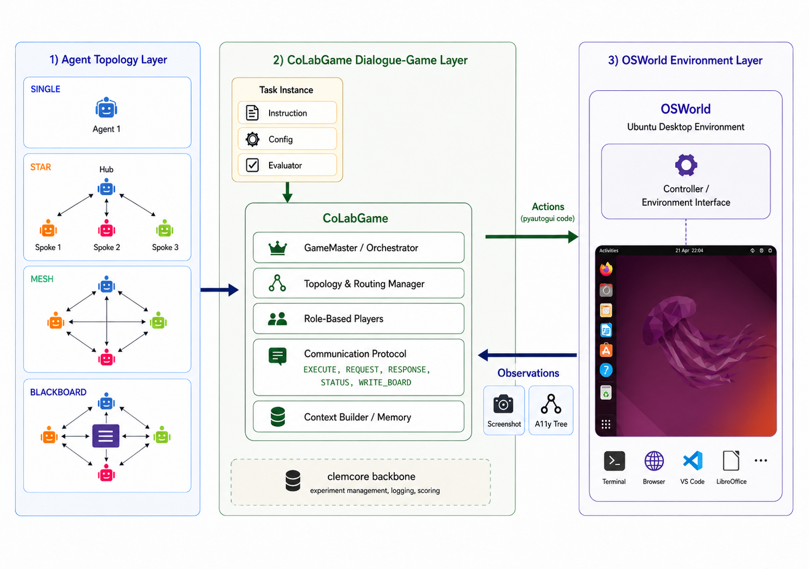
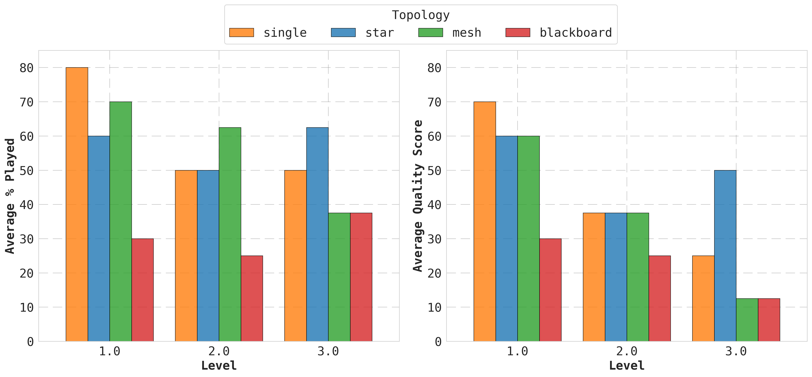
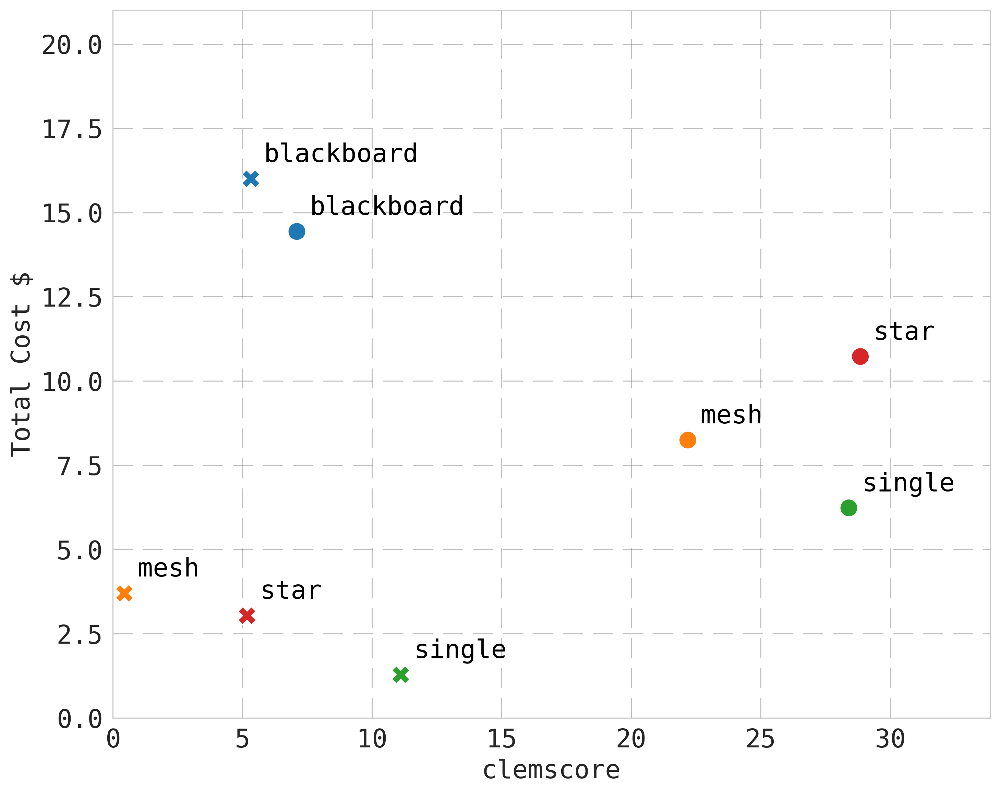
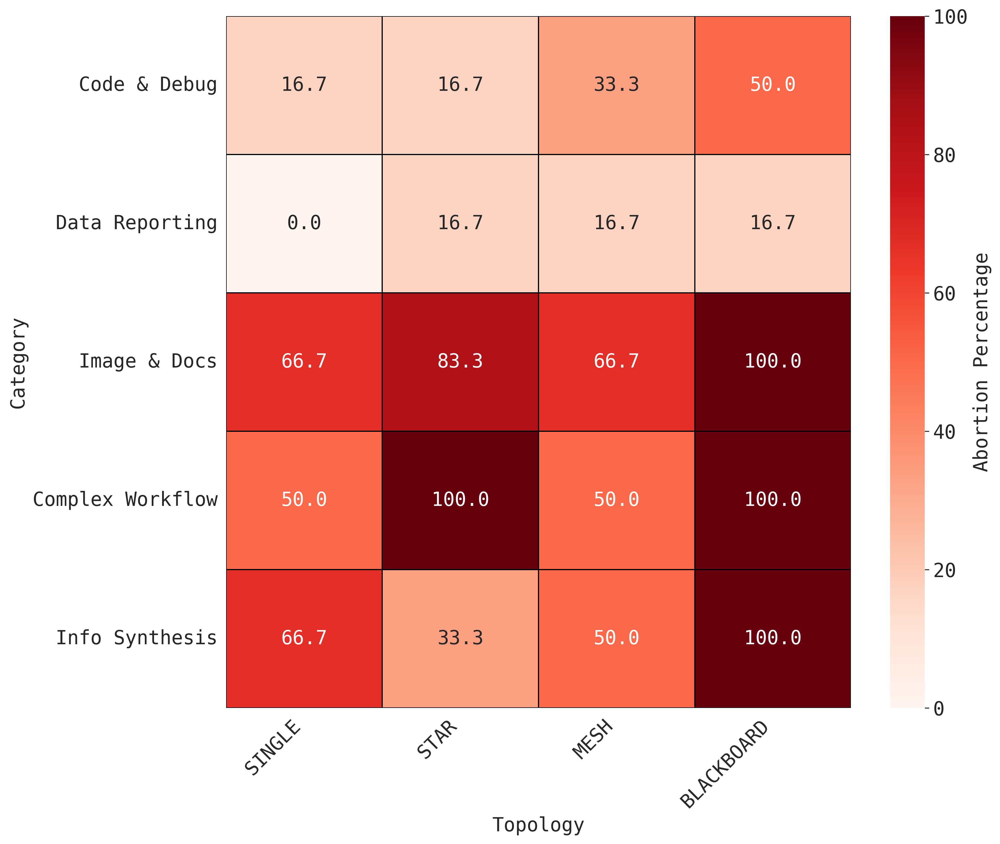
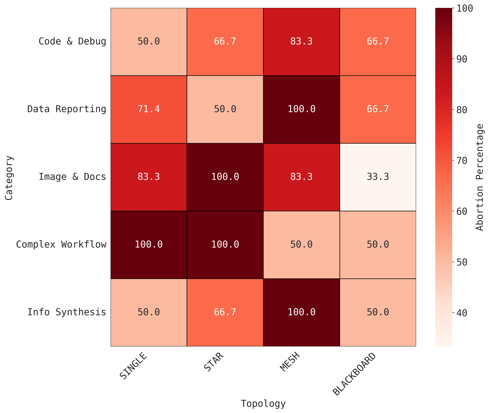

A dialogue-game framework for evaluating whether multi-agent LLM collaboration actually helps on real desktop tasks, and what kind of collaboration structure works best.
Most LLM-agent benchmarks test single agents on sandbox tasks. But real desktop work involves clicking through GUIs, dropping into terminals, juggling files across applications. That kind of work needs coordination across heterogeneous interfaces, and there wasn't a good way to evaluate it.
The few multi-agent papers that existed disagreed about whether coordination overhead was worth the price. Some showed gains from collaboration, others showed the opposite. Nobody was running controlled experiments with the same tasks across different collaboration structures.
CoLabGame is a Python evaluation framework built on two foundations: the clemcore dialogue-game engine for experiment management and scoring, and OSWorld as the desktop environment where agents actually execute tasks.
The framework has three layers:

Agents interact with the desktop through PyAutoGUI code execution and observe the environment via screenshots and accessibility trees. A GameMaster orchestrates all communication, enforces rules, and mediates between agents and the environment.
One agent handles everything. The baseline.
A central planner decomposes tasks and delegates to specialist agents. All communication goes through the hub.
All agents communicate freely with each other. No central coordinator. Decentralized decision-making.
Agents read from and write to a shared memory board. Structured round-robin protocol with mediated access.
In multi-agent topologies, each agent has a defined domain. The specialist roles include Office Productivity (LibreOffice), Software Development (coding and debugging), Digital Media (GIMP), Web Research, and OS Operations (file management, terminal). Generic roles like Planner and Critic coordinate across specialists.
Agents communicate through typed JSON messages: EXECUTE (run PyAutoGUI code on the desktop), REQUEST (ask another agent for help), RESPONSE (reply to a request), STATUS (signal done or failed), and WRITE_BOARD (post to the shared blackboard). The GameMaster enforces format, content, and protocol constraints, aborting runs that violate rules.
The evaluation covers five task categories across three complexity levels:
Two representative task instances per category remain fixed across all experiments to ensure fair comparison. The observation setting is locked to Screenshot + Accessibility Tree after a modality analysis confirmed it as the most effective perception mode.
All experiments run on two model backbones: GPT-5 and GPT-5-mini. Within any topology, all agents use the same underlying LLM to isolate the effect of collaboration structure from model heterogeneity.
The STAR (hierarchical) topology achieved the highest quality scores with GPT-5. A central planner that decomposes tasks and delegates to specialists produces better outcomes than agents working alone or negotiating as peers.
But the single-agent baseline had the lowest abort rate. For GPT-5, SINGLE achieved 0% abortions on Data Reporting tasks. Adding collaboration introduces coordination overhead that doesn't always justify itself, especially on structured, single-application tasks.

For GPT-5, there's a significant negative correlation between total request count and task success across all collaborative topologies. The strongest effect is in MESH (r = -0.62, p = 0.0007). In decentralized settings, unstructured verbosity destabilizes coordination. Teams that talked more failed more.
For GPT-5-mini, the correlation disappears entirely. None of the topologies show significant relationships between communication volume and success. The smaller model's failures come from reasoning errors, not communication overload.
This reveals a model-dependent dynamic: as reasoning capability increases, communicative efficiency becomes a marker of successful collaboration. For advanced agents, brevity predicts success. For less capable ones, it doesn't matter.
The scatter plot below shows cost versus performance (clemcore score) for each topology-model combination. The ideal position is bottom-right: high performance at low cost.

SINGLE with GPT-5 sits in the sweet spot: strong performance at the lowest cost. STAR with GPT-5 gets the highest absolute performance but costs more. BLACKBOARD is expensive and underperforms across both models. MESH occupies the middle ground but doesn't clearly justify its coordination overhead.
Only about 39% of episodes (GPT-5) complete successfully without being aborted. The rest either fail outright (14.7%), get aborted and fail (37.2%), or get aborted but still succeed (9.3%).


For GPT-5, abortion rates increase with communication complexity. SINGLE is robust across categories. BLACKBOARD struggles with everything except Code & Debug.
For GPT-5-mini, patterns are less predictable. The BLACKBOARD topology, which overwhelmed GPT-5, becomes the most resilient option for the smaller model. Its structured round-robin protocol compensates for weaker planning ability.
9.3% of episodes were terminated by the system for protocol violations but still judged successful by the deterministic evaluator. The agents completed the actual task but failed to follow the communication rules cleanly.
This highlights a real tension in agent evaluation: models can be competent at the task but incompetent at coordinating their own workflow signals. Emergent "perfectionism" in GPT-5 (adding unnecessary steps like centering and alignment) often pushed runs past the transition limit, even though the core task was already done.
Across all the experiments, successful multi-agent runs share a few patterns: